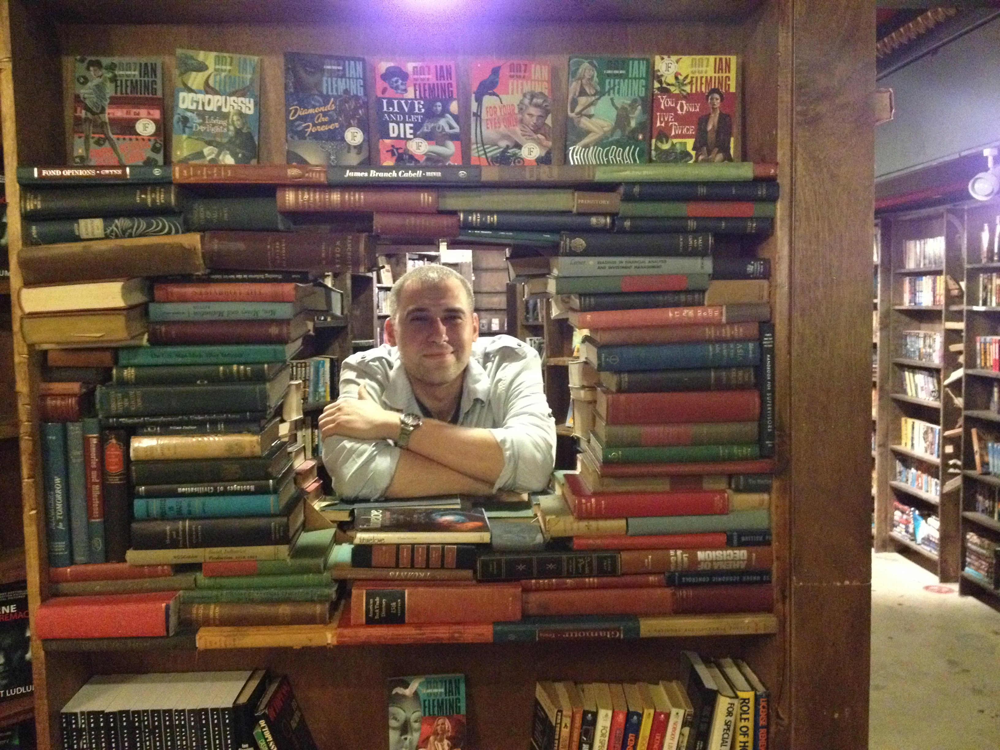
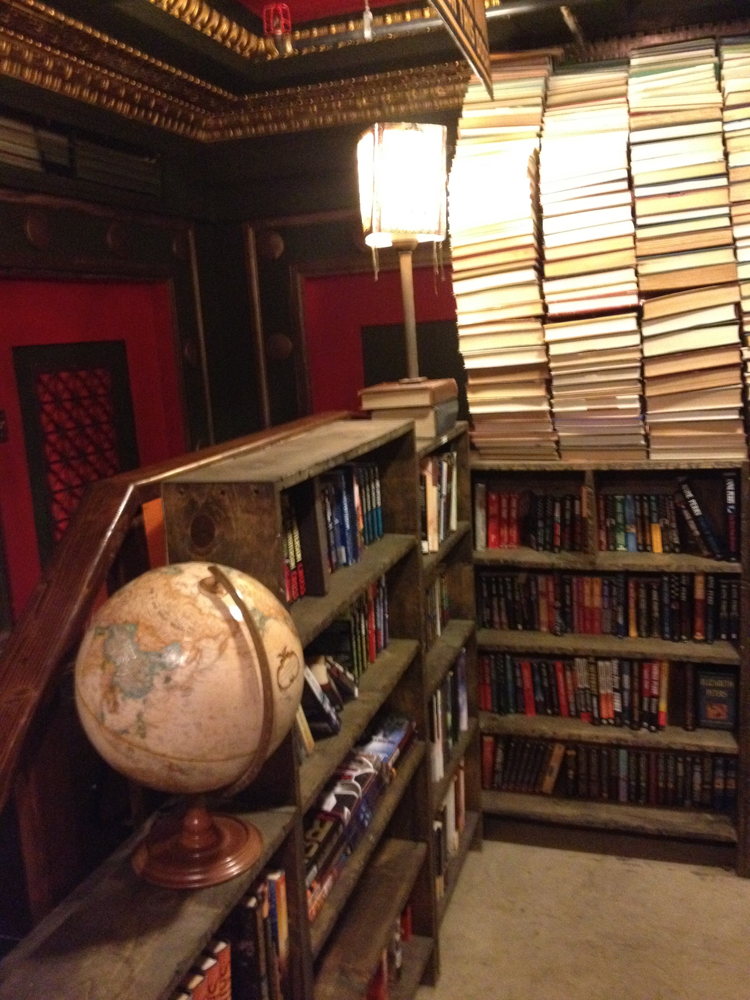

My name is Kristap Baltin, and the hobby I will talk about today is far too often neglected. Reading, while often used on smart phones for text messages and social media, is in contrast, being used far less for longer strecthes of pleasure reading. As humanity's entertainment options continue to grow, a majority of people are addicted to their smart phones, streaming accounts, and social media. The latter, in particular, accounts for an increase in debilitating moods, shorter attention spans, narcissism and depression. The upsides of pleasure reading however, are obvious and well-documented.
Here is an article from Healthline.com that documents the many and various benefits of reading. Among them are increases in empathy, prevention of cognitive decline, stress reduction, alleviation of depression and many more. Dana Gioia, former chairman of the National Endowement for the Arts, has completed many studies finding that young adults who read for leisure are more likely to later become civic-minded, empathetic, active, and charitable. Here is a link to him being interviewed on NPR

I personally enjoy reading fiction for leisure because it brings me a lot of pleasure. I enjoy reading more than watching TV or movies because reading forces me to use my imagination. While visual entertainment does all the work for you, reading strains your faculties and forces you to use your brain to either decipher what can sometimes be complex passages or utilize your imagination to create your own images and ideas of what concepts can be and how they look. Most importantly, being aware that I only live one relatively short life, it is a dream come true to be able to live multiple lives through the act of reading. I see reading as an extension of my mortality. Though there are a limited amount of things I can accomplish on this earth while alive, I can multiply my experiences in an exponential fashion through living the lives and experiences of the characters I encounter in my favorite literary works. I can be an addicted and arrogant, yet brilliant detective, solving cases in a dense and foggy 19th century London, or I can find myself travelling around the world in 80 days, using locomotives, large ships, and even high-flying air balloons. The options are really limitless, and the challenge of finishing a complicated, yet enlightening text can be a tremendous reward both intelectually and spiritually.

Starting to read for fun can be intimidating. Many people start with classics as their entry, and it can often be the best choice, as it will usually be a critically acclaimed work with important themes and ideas. It is imperative, however, that you choose wisely when first starting out. Choosing the wrong book may turn you off from reading, and prevent you from eventually tackling those more difficult novels that are also the most rewarding. Short stories are the perfect entry way into the world of literature. Their relatively small page count and containment of bigger ideas on a smaller canvas allows you to have an entertaining, yet thoughtful experience in one sitting. I would reccomend the beginning reader to read a quick summary and make sure that the theme (what the story is about, or the main or recurring idea of the story) of the story is something you may relate to or have an interest in. As a beginning reader, that is a good method to keep yourself on pace and not to get discouraged of reading. As your skills increase, you will notice that it's not as important for you to relate to the characters or even have to have anything in common or in relation with in the story. The magic of reading will in that case be realized, as you will have gotten beyond yourself, and will have more of an interest in the created world of the author. It is at that point that your imagination will be at its strongest, and will receive the highest pleasure from the act of reading as an act of reception and creation. Here is a list of some websites that are dedicated to providing you with high quality short stories meant to foster and kindle your love of reading and storytelling.